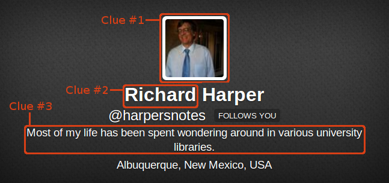

Can you use machine learning and statistics to predict the gender of someone on Twitter?
Male or Female?
If you have spent any kind of time online, then you have probably heard of the various (online) social networks out there.
Things such as Facebook, Orkut, VK (popular in Russia), Mixi (popular in Japan) and Twitter.
Many of these social network require you to tell them whether you are a male or female.
(To some, this information is invaluable.)
However, Twitter doesn't
Twitter
Twitter in particular, is an interesting social network.
Both from the point of view of someone using it.
And from the point of view of someone doing research.
Twitter has made it easy for people to sign up.
Some websites want to know all your (deepest darkest) details before they let you sign up.
Twitter doesn't.
All a person has to provide to Twitter to sign up is a name and e-mail address.
That's it.
Figure 1.
Twitter's signup form
(You don't have to tell Twitter where you live or your date of birth or gender, etc.)
And really, the name doesn't even have to be real.
Using a pseudonym or any other name you want to use is just fine.
If you want your name on Twitter to be "Panda Puncher", go right ahead.
(This is one of the strengths and attractions of Twitter in my opinion.)
Inferring Gender
Even though Twitter doesn't ask for your gender, doesn't mean no one cares about it.
(People involving in advertising care about it a lot. People involved with identity. People involved in fraud detection care too.)
But if someone doesn't self-assert their gender (to say they are male or female), can we infer someone's gender from their Twitter account?
I'd say the answer is "yes".
(Probably because I've already worked on commercial projects that did gender prediction with similar types of data :-) )
I think you can infer someone's gender without them telling you what it is, based on clues they leave around, with varying degrees of success.
Consider, for example, a population that is 50% male and 50% female.
If you guessed "male" every single time, then (with a random sample) your gender prediction would be accurate 50% of the time.
This is kind of like the idiom: a stopped clock is right twice a day.
Any gender prediction engine we consider "good" should do better than this.
And I can even think of different ways that may work.
Examples
For example, consider the profile of a friend of mine of Twitter, in figure 2.

Figure 2.
Twitter profile of @harpersnotes with 3 clues useful for gender predication marked in red.
(Remember, these clues are for a machine learning system to use.
Of course a human can do this categorization pretty easily, but we want to automate it.)
The first clue is the avatar image.
A photo was used.
We could use computer vision to infer the gender of that image.
The second clue is the given name ("Richard").
Many given names are highly gender skewed.
(I suspect there probably a lot more males with the name "Richard" than there are females.
Which would probably make it a "good" gender predictor.)
The third clue probably seems less obvious, but the Twitter profile description can also give a clue to the gender.
It could be that males and females use language differently, and that the language used in the description is a gender predictor.
There is actually a fourth clue not marked in the figure 2.
The Twitter screen name ("@harpersnotes").
Like the third clue, it could be that males and females use language differently for the Twitter screen name too.
And thus the words used the Twitter screen name could be a gender predictor.
As a possible fifth clue also not shown in figure 2, it is conceivable that the location could be a gender predictor.
Perhaps not the location in figure 2 ("Albuquerque, New Mexico, USA "),
but say if the location is somewhere where there is a strong gender skew, such as India or China, or even a remote mining town in Northern Canada where the only people living there are mining workers, and all the miners are males.
(And Twitter does offer us other clues not shown in figure 2.
Perhaps the Twitter user ID gives us a clue.
For example, if more males signed up for Twitter in the first 3 years that Twitter existed, and we know that Twitter user IDs with a range between certain numbers are from that era,
then we can predict male for all users with Twitter user IDs we think are from that era, and predict nothing outside of that.)
Now obviously, in general, some of these clues are going to be better gender predictors than others.
(Perhaps the given name is a better gender predictor than the avatar image because many people don't use photos for their avatar image.)
And for specific profiles, which is gender predictor is accurate will vary; but we expect trends.
Here's an example of another friend whose profile really gives us no clues, or barely any, as seen in figure 3:
Probably not much in the way of clues here, in figure 3.
Not unless not giving clues is gender skewed :-)
(Note that I'm not trying to list out every possible data source that may be useful for gender prediction.
I am only trying to give you a "flavor" of the strategies that could be used.
Is there a gender skew with the apps people use and which send tweets to twitter?
Is there a gender skew in the time of day people tweet, or retweet, etc?
Does a person's social network (in the graph theory sense of the term) give clue's to their gender?
There are many possibilities one can test and build machine learning systems around.)
Accuracy
Now, this doesn't mean a single gender prediction strategy will always be 100% accurate.
(There is very likely going to be some level of error.)
But these strategies will have some level of accuracy.
And even with an error, these gender predictions may still be useful.
You could even (somehow) combine these different gender prediction strategies together, to create a single more accurate strategy for gender prediction with a lower error rate.
Analysis
Developing a gender prediction "engine" really could be done by just taking a reference data set of known male and female accounts and doing some analysis work.
(I.e., get a set of Twitter accounts that you know the gender for, and use some statistics, machine learning and educated guesses to discover differences between various things that are more common with males than female, and what things are more common with females than males. And use that to come up with a model you can use for making gender predictions.)
And then validate the resulting model against another (separate) set of Twitter accounts for which you know the gender.
(Just to verify that your model is a "good" one.)
Of course, these "engines" can have all sorts of nuances, special conditions, and may need to be updated from time to time, as past analysis work done may no longer be applicable.
Tweets
Another clue I haven't yet mention (because I wanted to save it for last) are a person's tweets.
Specifically, the text found in a person's tweet.
Are there differences between the way males and females tweet?
I suspect so (at least some of the time, if not a lot of the time).
We present a study of the relationship between gender, linguistic style, and social networks, using a novel corpus of 14,000 users of Twitter. Prior quantitative work on gender often treats this social variable as a binary; we argue for a more nuanced approach. By clustering Twitter feeds, we find a range of styles and interests that reflects the multifaceted interaction between gender and language. Some styles mirror the aggregated language-gender statistics, while others contradict them. Next, we investigate individuals whose language better matches the other gender. We find that such individuals have social networks that include significantly more individuals from the other gender, and that in general, social network homophily is correlated with the use of same-gender language markers. Pairing computational methods and social theory thus offers a new perspective on how gender emerges as individuals position themselves relative to audiences, topics, and mainstream gender norms.
Herring and Paolillo 2006 attempted to apply the informational/involvement word class features identified by Argamon et al. 2003 to a corpus of blog data.
After controlling for the genre of the blog, they found no significant gender differences in the frequency of the word classes, though they did find gender differences in the selection of genres: women wrote more "diary" blogs and men wrote more "filter" blogs that link to content from elsewhere in the web.
Moreover, the genres themselves did show a significant association with the gender - based features: the "diary" genre included more features thought to be predictive of women, and vice versa.
But within each genre, male and female language use was not distinguishable according to the informational/involvement feature set proposed by Argamon et al. 2003.
[...]
Argamon, Koppel, Pennebaker, & Schler 2007 assemble 19,320 English blogs (681,288 posts, 140 million words); they build a predictive model of gender from the 1,000 words with the highest information gain, obtaining accuracy of 80.5%.
For post hoc analysis, they apply two word categorizations: parts-of-speech (finding that men use more determiners and prepositions, while women use more personal pronouns, auxiliary verbs, and conjunctions) and an automatic categorization based on factor analysis.
Some of the factors are content - based (politics and religion), while others are more stylistic.
In general, the content - based factors are used more often by men, and the stylistic factors are used more by women -- including a factor centered on swear words.
Not directly Twitter related, but interesting.
Rao et al. 2010 assembled a dataset of microblog posts by 1,000 people on the Twitter social media platform.
They then built a predictive model that combined several million n-gram features with more traditional word and phrase classes.
Their best model obtains an accuracy of 72.3%, slightly outperforming a model that used only the word class features.
Post hoc analysis revealed that female authors were more likely to use emoticons, ellipses (...), expressive lengthening (nooo waaay), repeated exclamation marks, puzzled punctuation (combinations of ? and !), the abbreviation omg, and transcriptions of backchannels like ah, hmm, ugh, and grr.
The only words that they reported strongly attaching to males were affirmations like yeah and yea.
However, a crucial side note to these results is that the author pool was obtained by finding individuals with social network connections to unambiguously gendered entities: sororities, fraternities, and hygiene products.
Assumptions about gender were thus built directly into the data acquisition methodology, which is destined to focus on individuals with very specific types of gendered identities.
Burger, Henderson, Kim, & Zarrella 2011 applied a different approach to build a corpus with gender metadata, by following links to Twitter from blogs in which gender was explicitly indicated in the profile (they also performed some manual quality assurance by reading the associated Twitter profiles).
Analyzing more than 4 million tweets from 184,000 authors in many different languages (66.7% English), they obtained a predictive accuracy of 75.5% when using multiple tweets from each author, and 67.8% by using a single message per author.
Remarkably, both of these were higher than the accuracy of human raters, who predicted gender at an accuracy of 65.7% from individual messages.
The post hoc analysis yielded results that were broadly similar to those of Rao et al.:
emoticons and expressive words like aha, ooo, haha, ay! were correlated with female authors, and there were few words correlated with males.
The character sequences ht, http, htt, Googl, and Goog were among the most prominent male-associated features.
[...]
From the accuracy of these predictive models, it is indisputable that there is a strong relationship between language and gender, and that this relationship is detectable at the level of individual words and n-grams.
And for their work:
By clustering the authors in our dataset, we identify a range of different styles and topical interests.
Many of these clusters have strong gender orientations, but their use of linguistic resources sometimes directly conflicts with theaggregated language-gender statistics.
We find that linguistic tendencies that have previously been attributed to women or men as undifferentiated social groups often describe only a subset of individuals; there are strongly gendered styles that use language resources in ways that are odds with the overall aggregated statistics.
Not surprising.
Language usage is a predictor, but not prefect.
There is error in the prediction.
[W]e build a classifier capable of determining the gender of microblog authors from their writing style, with an accuracy of 88%.
We focus on the individuals that the classifier gets wrong, and examine their language in the context of their online social networks.
We find a significant correlation between the use of mainstream gendered language — as represented by classifier confidence — and social network gender homophily (how much a social network is made up of same - sex individuals).
Individuals whose gender is classified incorrectly have social networks that are much less homophilous than those of the individuals that the classifier gets right.
While the average social network in our corpus displays significant homophily (63% of connections are same - gender), social network features provide no marginal improvement in the classifier performance.
That is, social network gender homophily and the use of mainstream gendered linguistic features are closely linked, even after controlling for author gender
So, they build a gender prediction engine and then
they ran a Twitter data set for which they already knew the gender for each account.
Once they did that they noted the accounts which their gender prediction engine was wrong.
They then looked closer at those accounts which the gender prediction engine was wrong.
Citation
David Bamman, Jacob Eisenstein & Tyler Schnoebelen (2012). Gender in Twitter: Styles, stances, and social networks, arXiv: 1210.4567v1
 Twitter in particular, is an interesting social network.
Both from the point of view of someone using it.
And from the point of view of someone doing research.
Twitter in particular, is an interesting social network.
Both from the point of view of someone using it.
And from the point of view of someone doing research.